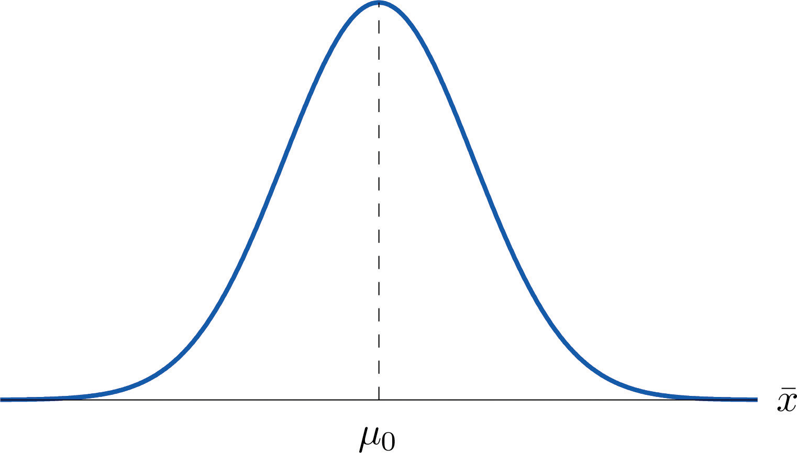
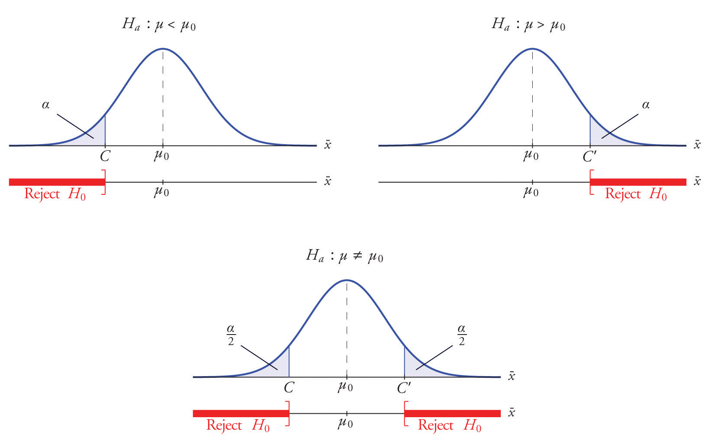
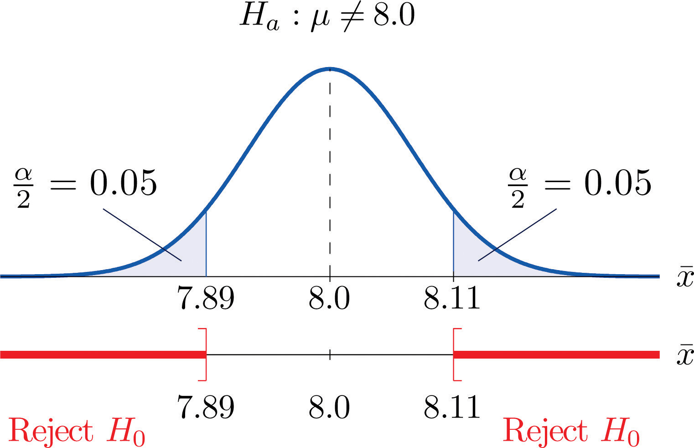

A hypothesis about the value of a population parameter is an assertion about its value. As in the introductory example we will be concerned with testing the truth of two competing hypotheses, only one of which can be true.
The null hypothesisThe statement that is assumed to be true unless there is convincing evidence to the contrary., denoted H0, is the statement about the population parameter that is assumed to be true unless there is convincing evidence to the contrary.
The alternative hypothesisA statement that is accepted as true only if there is convincing evidence in favor of it., denoted Ha, is a statement about the population parameter that is contradictory to the null hypothesis, and is accepted as true only if there is convincing evidence in favor of it.
Hypothesis testingA statistical procedure in which a choice is made between a null hypothesis and a specific alternative hypothesis based on information in a sample. is a statistical procedure in which a choice is made between a null hypothesis and an alternative hypothesis based on information in a sample.
The end result of a hypotheses testing procedure is a choice of one of the following two possible conclusions:
The null hypothesis typically represents the status quo, or what has historically been true. In the example of the respirators, we would believe the claim of the manufacturer unless there is reason not to do so, so the null hypotheses is The alternative hypothesis in the example is the contradictory statement The null hypothesis will always be an assertion containing an equals sign, but depending on the situation the alternative hypothesis can have any one of three forms: with the symbol “<,” as in the example just discussed, with the symbol “>,” or with the symbol “≠” The following two examples illustrate the latter two cases.
A publisher of college textbooks claims that the average price of all hardbound college textbooks is $127.50. A student group believes that the actual mean is higher and wishes to test their belief. State the relevant null and alternative hypotheses.
Solution:
The default option is to accept the publisher’s claim unless there is compelling evidence to the contrary. Thus the null hypothesis is Since the student group thinks that the average textbook price is greater than the publisher’s figure, the alternative hypothesis in this situation is
The recipe for a bakery item is designed to result in a product that contains 8 grams of fat per serving. The quality control department samples the product periodically to insure that the production process is working as designed. State the relevant null and alternative hypotheses.
Solution:
The default option is to assume that the product contains the amount of fat it was formulated to contain unless there is compelling evidence to the contrary. Thus the null hypothesis is Since to contain either more fat than desired or to contain less fat than desired are both an indication of a faulty production process, the alternative hypothesis in this situation is that the mean is different from 8.0, so
In Note 8.8 "Example 1", the textbook example, it might seem more natural that the publisher’s claim be that the average price is at most $127.50, not exactly $127.50. If the claim were made this way, then the null hypothesis would be , and the value $127.50 given in the example would be the one that is least favorable to the publisher’s claim, the null hypothesis. It is always true that if the null hypothesis is retained for its least favorable value, then it is retained for every other value.
Thus in order to make the null and alternative hypotheses easy for the student to distinguish, in every example and problem in this text we will always present one of the two competing claims about the value of a parameter with an equality. The claim expressed with an equality is the null hypothesis. This is the same as always stating the null hypothesis in the least favorable light. So in the introductory example about the respirators, we stated the manufacturer’s claim as “the average is 75 minutes” instead of the perhaps more natural “the average is at least 75 minutes,” essentially reducing the presentation of the null hypothesis to its worst case.
The first step in hypothesis testing is to identify the null and alternative hypotheses.
Although we will study hypothesis testing in situations other than for a single population mean (for example, for a population proportion instead of a mean or in comparing the means of two different populations), in this section the discussion will always be given in terms of a single population mean μ.
The null hypothesis always has the form for a specific number (in the respirator example , in the textbook example , and in the baked goods example ). Since the null hypothesis is accepted unless there is strong evidence to the contrary, the test procedure is based on the initial assumption that H0 is true. This point is so important that we will repeat it in a display:
The test procedure is based on the initial assumption that H0 is true.
The criterion for judging between H0 and Ha based on the sample data is: if the value of would be highly unlikely to occur if H0 were true, but favors the truth of Ha, then we reject H0 in favor of Ha. Otherwise we do not reject H0.
Supposing for now that follows a normal distribution, when the null hypothesis is true the density function for the sample mean must be as in Figure 8.1 "The Density Curve for ": a bell curve centered at Thus if H0 is true then is likely to take a value near and is unlikely to take values far away. Our decision procedure therefore reduces simply to:
Figure 8.1 The Density Curve for if H0 Is True
Think of the respirator example, for which the null hypothesis is , the claim that the average time air is delivered for all respirators is 75 minutes. If the sample mean is 75 or greater then we certainly would not reject H0 (since there is no issue with an emergency respirator delivering air even longer than claimed).
If the sample mean is slightly less than 75 then we would logically attribute the difference to sampling error and also not reject H0 either.
Values of the sample mean that are smaller and smaller are less and less likely to come from a population for which the population mean is 75. Thus if the sample mean is far less than 75, say around 60 minutes or less, then we would certainly reject H0, because we know that it is highly unlikely that the average of a sample would be so low if the population mean were 75. This is the rare event criterion for rejection: what we actually observed () would be so rare an event if μ = 75 were true that we regard it as much more likely that the alternative hypothesis μ < 75 holds.
In summary, to decide between H0 and Ha in this example we would select a “rejection regionAn interval or union of intervals such that the null hypothesis is rejected if and only if the statistic of interest lies in this region.” of values sufficiently far to the left of 75, based on the rare event criterion, and reject H0 if the sample mean lies in the rejection region, but not reject H0 if it does not.
Each different form of the alternative hypothesis Ha has its own kind of rejection region:
The key issue in our line of reasoning is the question of how to determine the number C or numbers C and C′, called the critical value or critical values of the statistic, that determine the rejection region.
The critical valueThe number or one of a pair of numbers that determines the rejection region. or critical values of a test of hypotheses are the number or numbers that determine the rejection region.
Suppose the rejection region is a single interval, so we need to select a single number C. Here is the procedure for doing so. We select a small probability, denoted , say 1%, which we take as our definition of “rare event:” an event is “rare” if its probability of occurrence is less than (In all the examples and problems in this text the value of will be given already.) The probability that takes a value in an interval is the area under its density curve and above that interval, so as shown in Figure 8.2 (drawn under the assumption that H0 is true, so that the curve centers at ) the critical value C is the value of that cuts off a tail area in the probability density curve of When the rejection region is in two pieces, that is, composed of two intervals, the total area above both of them must be , so the area above each one is , as also shown in Figure 8.2.
Figure 8.2
The number is the total area of a tail or a pair of tails.
In the context of Note 8.9 "Example 2", suppose that it is known that the population is normally distributed with standard deviation σ = 0.15 gram, and suppose that the test of hypotheses versus will be performed with a sample of size 5. Construct the rejection region for the test for the choice Explain the decision procedure and interpret it.
Solution:
If H0 is true then the sample mean is normally distributed with mean and standard deviation
Since Ha contains the ≠ symbol the rejection region will be in two pieces, each one corresponding to a tail of area From Figure 12.3 "Critical Values of ", , so C and C′ are 1.645 standard deviations of to the right and left of its mean 8.0:
C = 8.0 − (1.645)(0.067) = 7.89 and C′ = 8.0 + (1.645)(0.067) = 8.11The result is shown in Figure 8.3 "Rejection Region for the Choice ".
Figure 8.3 Rejection Region for the Choice
The decision procedure is: take a sample of size 5 and compute the sample mean If is either 7.89 grams or less or 8.11 grams or more then reject the hypothesis that the average amount of fat in all servings of the product is 8.0 grams in favor of the alternative that it is different from 8.0 grams. Otherwise do not reject the hypothesis that the average amount is 8.0 grams.
The reasoning is that if the true average amount of fat per serving were 8.0 grams then there would be less than a 10% chance that a sample of size 5 would produce a mean of either 7.89 grams or less or 8.11 grams or more. Hence if that happened it would be more likely that the value 8.0 is incorrect (always assuming that the population standard deviation is 0.15 gram).
Because the rejection regions are computed based on areas in tails of distributions, as shown in Figure 8.2, hypothesis tests are classified according to the form of the alternative hypothesis in the following way.
If Ha has the form the test is called a two-tailed test.
If Ha has the form the test is called a left-tailed test.
If Ha has the form the test is called a right-tailed test.
Each of the last two forms is also called a one-tailed test.
The format of the testing procedure in general terms is to take a sample and use the information it contains to come to a decision about the two hypotheses. As stated before our decision will always be either
There are four possible outcomes of hypothesis testing procedure, as shown in the following table:
| True State of Nature | |||
| H0 is true | H0 is false | ||
| Our Decision | Do not reject H0 | Correct decision | Type II error |
| Reject H0 | Type I error | Correct decision | |
As the table shows, there are two ways to be right and two ways to be wrong. Typically to reject H0 when it is actually true is a more serious error than to fail to reject it when it is false, so the former error is labeled “Type I” and the latter error “Type II.”
In a test of hypotheses, a Type I errorRejection of a true null hypothesis. is the decision to reject H0 when it is in fact true. A Type II errorFailure to reject a false null hypothesis. is the decision not to reject H0 when it is in fact not true.
Unless we perform a census we do not have certain knowledge, so we do not know whether our decision matches the true state of nature or if we have made an error. We reject H0 if what we observe would be a “rare” event if H0 were true. But rare events are not impossible: they occur with probability Thus when H0 is true, a rare event will be observed in the proportion of repeated similar tests, and H0 will be erroneously rejected in those tests. Thus is the probability that in following the testing procedure to decide between H0 and Ha we will make a Type I error.
The number that is used to determine the rejection region is called the level of significance of the testThe probability that defines an event as “rare;” the probability that the test procedure will lead to a Type I error.. It is the probability that the test procedure will result in a Type I error.
The probability of making a Type II error is too complicated to discuss in a beginning text, so we will say no more about it than this: for a fixed sample size, choosing smaller in order to reduce the chance of making a Type I error has the effect of increasing the chance of making a Type II error. The only way to simultaneously reduce the chances of making either kind of error is to increase the sample size.
Hypotheses testing will be considered in a number of contexts, and great unification as well as simplification results when the relevant sample statistic is standardized by subtracting its mean from it and then dividing by its standard deviation. The resulting statistic is called a standardized test statistic. In every situation treated in this and the following two chapters the standardized test statistic will have either the standard normal distribution or Student’s t-distribution.
A standardized test statisticThe standardized statistic used in performing the test. for a hypothesis test is the statistic that is formed by subtracting from the statistic of interest its mean and dividing by its standard deviation.
For example, reviewing Note 8.14 "Example 3", if instead of working with the sample mean we instead work with the test statistic
then the distribution involved is standard normal and the critical values are just The extra work that was done to find that C = 7.89 and is eliminated. In every hypothesis test in this book the standardized test statistic will be governed by either the standard normal distribution or Student’s t-distribution. Information about rejection regions is summarized in the following tables:
| When the test statistic has the standard normal distribution: | ||
| Symbol in Ha | Terminology | Rejection Region |
| < | Left-tailed test | |
| > | Right-tailed test | |
| ≠ | Two-tailed test | |
| When the test statistic has Student’s t-distribution: | ||
| Symbol in Ha | Terminology | Rejection Region |
| < | Left-tailed test | |
| > | Right-tailed test | |
| ≠ | Two-tailed test | |
Every instance of hypothesis testing discussed in this and the following two chapters will have a rejection region like one of the six forms tabulated in the tables above.
No matter what the context a test of hypotheses can always be performed by applying the following systematic procedure, which will be illustrated in the examples in the succeeding sections.
The procedure that we have outlined in this section is called the “Critical Value Approach” to hypothesis testing to distinguish it from an alternative but equivalent approach that will be introduced at the end of Section 8.3 "The Observed Significance of a Test".
State the null and alternative hypotheses for each of the following situations. (That is, identify the correct number and write and the appropriate analogous expression for Ha.)
State the null and alternative hypotheses for each of the following situations. (That is, identify the correct number and write and the appropriate analogous expression for Ha.)
Describe the two types of errors that can be made in a test of hypotheses.
Under what circumstance is a test of hypotheses certain to yield a correct decision?
A Type I error is made when a true H0 is rejected. A Type II error is made when a false H0 is not rejected.